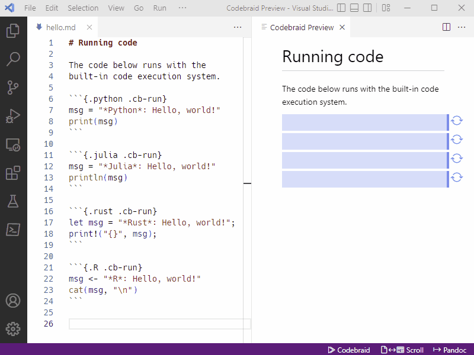
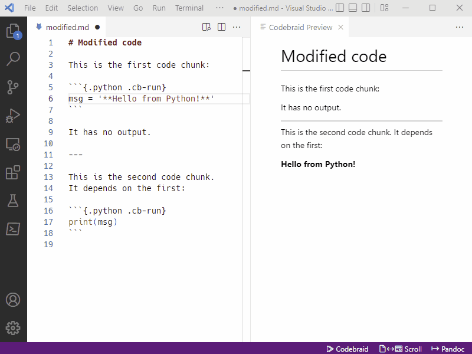
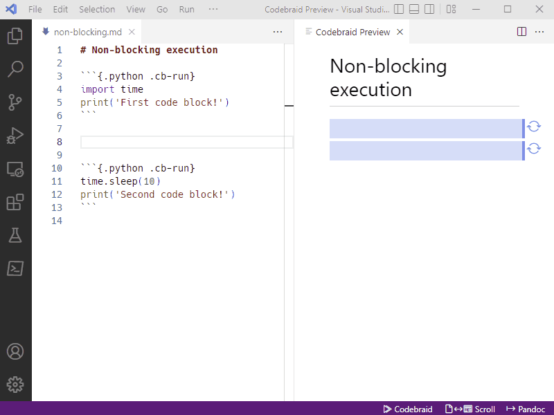
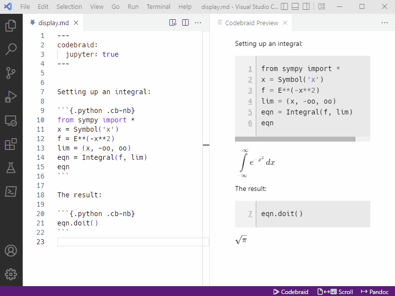

Code execution
Code blocks and inline code can be executed with Codebraid, using Jupyter kernels or its built-in code execution system.
-
When Jupyter kernels are used, you can get the same output you would see in a Jupyter notebook. Or you can easily customize what is displayed.
-
The built-in code execution system is convenient when you want to run code exactly as if it were saved to a file and executed as a subprocess. The built-in system is based on templates and can easily be extended to support additional languages. For example, Rust support involves less than 50 lines total of templates and configuration.
To run code, install Codebraid. Add a Codebraid attribute like .cb-run or
.cb-nb to the code blocks or inline code you want to run. Then click the
“Codebraid” button in the status bar (bottom right), or select the Run code
with Codebraid command from the Command Palette (Ctrl+Shift+P). While
the Markdown part of the preview updates automatically, code never runs
automatically. Code output is cached, though, and the cache loads
automatically.
The animation below shows code being executed with the built-in execution system. When code has not yet been executed, it is represented by a placeholder box in the preview.

Modified code
When executed code is modified, its output is marked as stale in the preview. If it has no output, then a placeholder is inserted instead. All later code that is executed in the same session is marked as stale as well, since its output may be affected by the modified code chunk.

Non-blocking execution
Code execution does not block the preview from updating. Code execution is decoupled from the preview process, so the preview always remains live! Keep writing while your code runs!

Custom display
Codebraid provides a number of options for customizing the display of code
output. The keyword show can be used to specify exactly what is displayed,
while hide can be used to remove specific elements that are currently shown.
